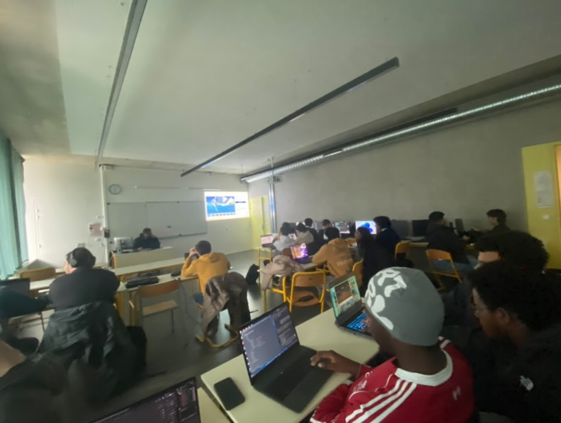
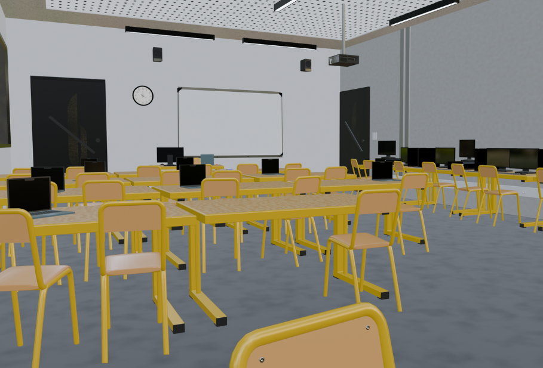

TXLFORMA – Plateforme e-learning
Projet fullstack ambitieux réalisé en équipe : plateforme de vente de formations en ligne avec tableau de bord selon les rôles (utilisateur, formateur, admin), paiement Stripe, suivi pédagogique et salle de classe 3D modélisée dans Blender et intégrée au site.
Contexte & objectif
TXLFORMA est un site de formation en ligne complet : page d’accueil, catalogue, inscription et connexion, tableau de bord adapté à chaque rôle (utilisateur, formateur, admin), paiement sécurisé avec Stripe, suivi des notes et de l’émargement, et une salle de classe 3D immersive pour les cours. L’enjeu était de livrer un produit abouti, de la maquette Figma au déploiement, en travaillant en méthodologie Agile avec Jira et Git.
Page d’accueil

Stack technique
Design & front-end
Maquettes réalisées sur Figma (inspiration e-learning). Développement en React : accueil, catalogue, tableau de bord selon le rôle, inscription et connexion, gestion des rôles. Intégration de Stripe pour le paiement des formations.
Modélisation 3D & intégration web

La salle de classe a été modélisée dans Blender (tables, chaises, PC, tableau, équipements). Textures et bake pour les performances. Animations et caméras. Intégration au site avec contrôles : rotation, zoom, déplacement, vues (ex. « Professeur »).
Comparaison avant / après
Référence réelle de la salle (cours en présentiel) puis rendu 3D final intégré au projet.


Back-end & API
API Spring Boot : gestion des comptes, formations, sessions et inscriptions. Données pour le tableau de bord (chiffre d’affaires, utilisateurs par rôle, taux de réussite) et métier (notes, émargement).
Tableau de bord & datavisualisation

Pour les administrateurs : datavisualisations (chiffre d’affaires, utilisateurs par rôle, formations par catégorie, activités récentes). Sessions à venir, moyenne des sessions. Gestion des notes et de l’émargement.
Gestion de projet & méthodologie
Jira pour les user stories et les sprints, Git / Bitbucket pour le versioning et la revue de code. Méthodologie Agile / Scrum en 4 sprints : mise en place de l’environnement, création des fonctionnalités (CRUD, auth JWT, maquettes), ajout des fonctions clés (Stripe, 3D, tableaux de bord), intégration finale et déploiement. Workflow Gitflow : un ticket Jira = une branche, pull request avec validations.
Ressources & documentation
Une présentation PDF complète détaille les sprints, l’architecture technique, Stripe, la 3D, l’hébergement (Vercel, Render, TiDB), le SEO et la politique de confidentialité.